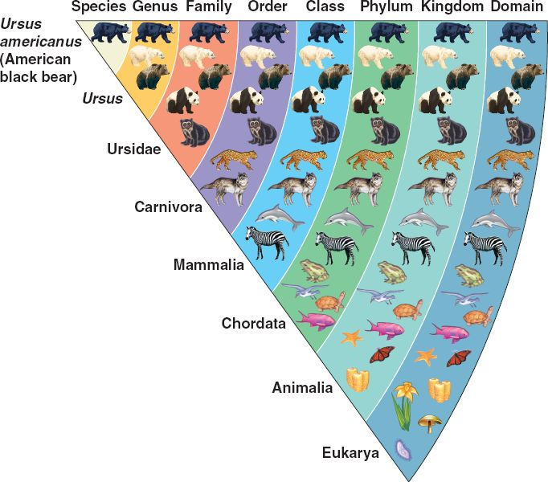
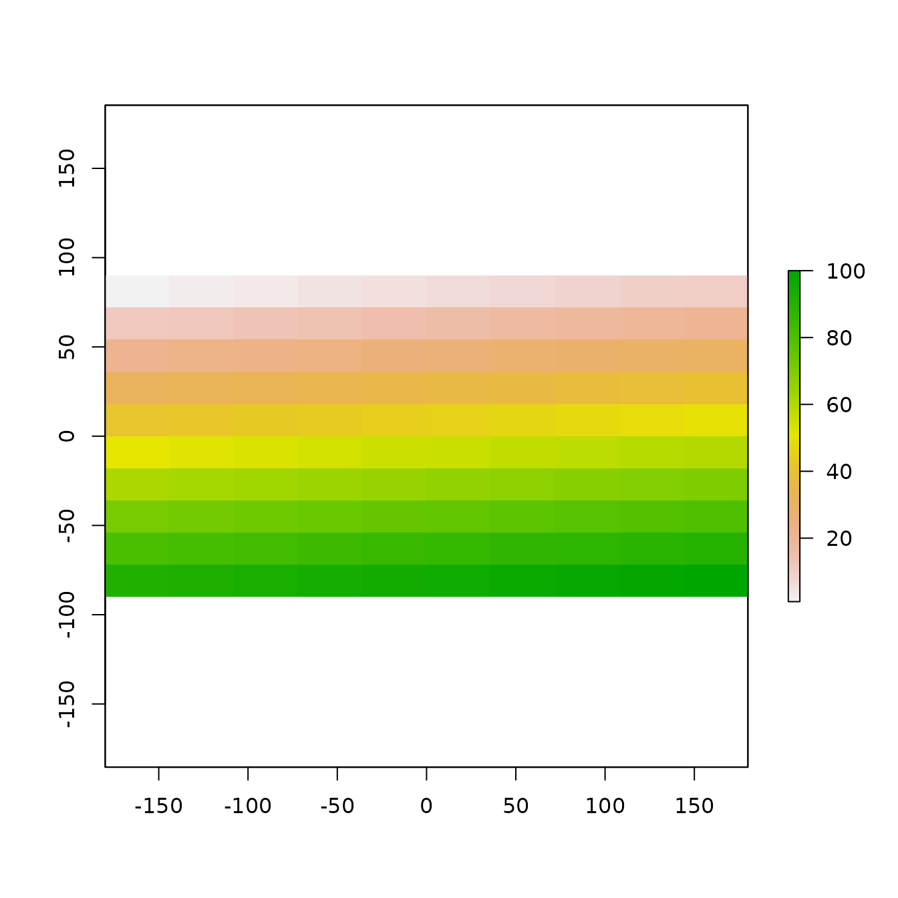
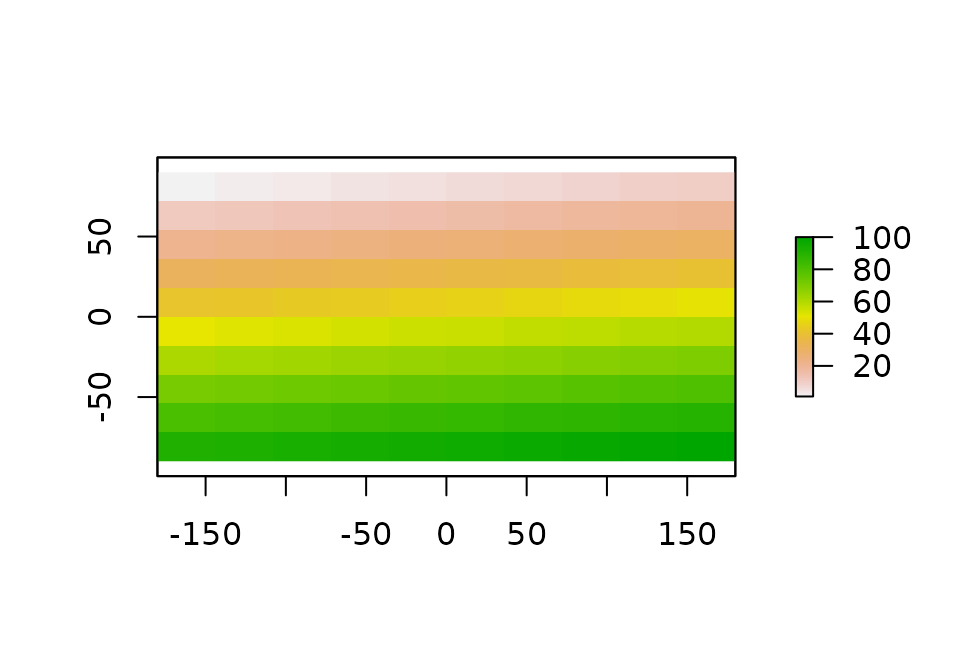

Unit 1 Module 2
GEOG246-346
2026-08-25 Back to home
Source:vignettes/unit1-module2.Rmd
unit1-module2.RmdIntroduction
In this module, we will begin to learn about the R
language, starting with the different types of R objects,
and how and where (in environments) they interact with one another. As I
was trained as an ecologist, I find it helpful to think of how the
language functions in ecological terms. First, we can think of
R objects (data and functions that are held in
memory) as being like species (plant or animal) with their own
classification system, or taxonomy, and these objects are found in and
interact within different environments (note: this conceptual framework
is not the same as the “R ecosystem” terminology you might see online
(e.g. this), which refers to the
array of user-contributed packages and R-related tools,
e.g. RStudio).
So let’s first look at R’s species.
A taxonomy of R
The Linnean system of biological classification groups species hierarchically, from Kingdom all the way down to species (and even sub-species), according to the figure below (source).
{kind=link}

We can adapt the lower end of the hierarchy to classify
R’s objects (and probably most any other programming
language), borrowing the organization from family, genus, and species.
In fact, we could use the higher level organization if we wanted to
classify R itself within the context of other analytical
tools and programming methods:
| Domain | Analog; digital |
| Kingdom | Mainframe; Desktop; Laptop; Phone; Cloud/HPC |
| Phylum | Windows; Mac; Linux |
| Class | Interpreted; Compiled |
| Order | Python; Ruby; Perl; R |
| Family | S3; S4; RC |
| Genus | vector; matrix; data.frame; array; list; function |
| Species | logical; integer; character; boolean; closure |
Admittedly the classifications I give above this might not be that
sound, but our focus here is on Family, Genus, Species, which are
internal to R. Here we liken taxonomic family to the set of
classes that define the different types of objects in R. “But
wait”, you say, “that’s confusing! Why don’t you map taxonomic class to
R classes?” I know, I know, but I wanted to use the whole
hierarchy, and it felt better to use Class to distinguish programming
languages (into interpreted versus compiled). Plus I didn’t want to have
to jump over Order, which I would have struggled to fill with this
analogy.
Moving on, Family maps onto R structures, and Species
onto types, primarily to data types. My organization of these topics is
pieced together from several sources of information that are online
(classes 1, 2;
structures 3,
4;
types: 5), and it
is based on the level of complexity inherent in the object.
Species (data types)
Let’s start with the simplest level first, the species in our
taxonomic analogy. Here we refer to the types of data that we work with
(in R or any language). Types are actually assigned to any
R object, even ones that we are more complex, as the
typeof function (run ?typeof to see) will show
you, but here we are thinking only of the types of data, which are
logical, integer, double, character, NULL, and the less used (at least
for this class) complex and raw.
typeof(FALSE)
#> [1] "logical"
typeof(1L)
#> [1] "integer"
typeof(1)
#> [1] "double"
typeof("a")
#> [1] "character"
typeof(NULL)
#> [1] "NULL"
as.raw(1)
#> [1] 01
typeof(as.raw(1))
#> [1] "raw"What is raw? According to ?raw:
The raw type is intended to hold raw bytes
Genus (data structures and functions)
One level up from data types are structures and functions. I liken these to the genus level because both are designed to do something with data–either hold the data or do something to, with, or on the data, and each of these can have many forms. For example, a vector is a type of data structure, which can be either an atomic vector or a list, and any of these can hold multiple data types. So let’s look at structures first.
Data structures
One dimensional
I have already mentioned the most basic structure, which is a vector. An atomic vector is a one-dimensional object that contains a single data type:
a <- c("a", "b", "c", "d")
a
#> [1] "a" "b" "c" "d"
b <- 1:10
b
#> [1] 1 2 3 4 5 6 7 8 9 10
d <- TRUE
d
#> [1] TRUEThe object a is a character vector with four elements,
b is an integer vector with 10 elements, and d is logical
vector with one element. To strain the taxonomic example here, you can
think of each of these vectors as a genus that contains just one
species. A list, on the other hand, can be thought of as a
genus containing multiple species, as it can contain many different data
types within a single object.
Two or more dimensions
Notice that each of the data types is maintained in the list (which
we put together using the list function), and we can verify
the type of data in the list using the str function. If we
try to put together this same mix of types into an atomic vector using
the c (concatenate) function, we don’t get the same
results.
It coerces everything to a character data type.
There are several structures that have two or more dimensions. There
are the matrix, the data.frame, and the
array. The first two are two-dimensional, in that they
consist of rows and columns, and the third can have an arbitrary number
of dimensions.
m <- cbind(v1 = 1:4, v2 = 1:4)
m
#> v1 v2
#> [1,] 1 1
#> [2,] 2 2
#> [3,] 3 3
#> [4,] 4 4
str(m)
#> int [1:4, 1:2] 1 2 3 4 1 2 3 4
#> - attr(*, "dimnames")=List of 2
#> ..$ : NULL
#> ..$ : chr [1:2] "v1" "v2"
m2 <- cbind(v1 = c("a", "b"), c("c", "d"))
m2
#> v1
#> [1,] "a" "c"
#> [2,] "b" "d"
str(m2)
#> chr [1:2, 1:2] "a" "b" "c" "d"
#> - attr(*, "dimnames")=List of 2
#> ..$ : NULL
#> ..$ : chr [1:2] "v1" ""
DF <- data.frame(v1 = 1:4, v2 = as.numeric(1:4), v3 = c("a", "b", "c", "d"))
DF
#> v1 v2 v3
#> 1 1 1 a
#> 2 2 2 b
#> 3 3 3 c
#> 4 4 4 d
str(DF)
#> 'data.frame': 4 obs. of 3 variables:
#> $ v1: int 1 2 3 4
#> $ v2: num 1 2 3 4
#> $ v3: chr "a" "b" "c" "d"
arr <- array(c(1:4, 1:4), dim = c(2, 2, 2))
arr
#> , , 1
#>
#> [,1] [,2]
#> [1,] 1 3
#> [2,] 2 4
#>
#> , , 2
#>
#> [,1] [,2]
#> [1,] 1 3
#> [2,] 2 4
str(arr)
#> int [1:2, 1:2, 1:2] 1 2 3 4 1 2 3 4A matrix can only hold a single data type (like an
atomic vector, if you try to mix types it will coerce them all to one
kind–so a matrix is a genus that can only hold one species). A
data.frame, which is actually a special kind of
list that binds vectors containing the same number of
elements into columns (so that they can have the same number of rows),
can mix data types (a genus with multiple species). An
array, on the other hand, can only have one data type
despite being able to have more than one dimension.
Let’s turn back to the list now, since we just mentioned
it in the context of the data.frame. A list is
very versatile, and can contain any kind of Robject.
l2 <- list(m, m2, DF, arr, c, list)
l2
#> [[1]]
#> v1 v2
#> [1,] 1 1
#> [2,] 2 2
#> [3,] 3 3
#> [4,] 4 4
#>
#> [[2]]
#> v1
#> [1,] "a" "c"
#> [2,] "b" "d"
#>
#> [[3]]
#> v1 v2 v3
#> 1 1 1 a
#> 2 2 2 b
#> 3 3 3 c
#> 4 4 4 d
#>
#> [[4]]
#> , , 1
#>
#> [,1] [,2]
#> [1,] 1 3
#> [2,] 2 4
#>
#> , , 2
#>
#> [,1] [,2]
#> [1,] 1 3
#> [2,] 2 4
#>
#>
#> [[5]]
#> function (...) .Primitive("c")
#>
#> [[6]]
#> function (...) .Primitive("list")
str(l2)
#> List of 6
#> $ : int [1:4, 1:2] 1 2 3 4 1 2 3 4
#> ..- attr(*, "dimnames")=List of 2
#> .. ..$ : NULL
#> .. ..$ : chr [1:2] "v1" "v2"
#> $ : chr [1:2, 1:2] "a" "b" "c" "d"
#> ..- attr(*, "dimnames")=List of 2
#> .. ..$ : NULL
#> .. ..$ : chr [1:2] "v1" ""
#> $ :'data.frame': 4 obs. of 3 variables:
#> ..$ v1: int [1:4] 1 2 3 4
#> ..$ v2: num [1:4] 1 2 3 4
#> ..$ v3: chr [1:4] "a" "b" "c" "d"
#> $ : int [1:2, 1:2, 1:2] 1 2 3 4 1 2 3 4
#> $ :function (...)
#> $ :function (...)We can put all the matrices, data.frames, and
array we just made into a list, as well as
some of the functions we were using to make those objects
(c, list).
Functions
That brings us now to functions. I know it is perhaps strained to think of a function as a genus, but functions are a kind of structure and functions can be organized into different groups, so it is not entirely crazy to think of functions as being analogous(ish) to Genus. So what are the functional genera?
Primitives
The first genus consists of primitive functions, of which
c and list are two examples, but also ones
like sum. Primitive functions are actually C
functions that are called directly by R that contain no
R code:
c
#> function (...) .Primitive("c")
sum
#> function (..., na.rm = FALSE) .Primitive("sum")
list
#> function (...) .Primitive("list")By running the function without parentheses, you can see what type of
function they are. You can also get a complete list of R’s
primitive functions by running
names(methods:::.BasicFunsList).
Operators
Operators are another kind of functional genus, such as the
usual mathematical symbols +, -,
/, *, and logical ones such as
>, <, and |, plus a number
of others, some of which are listed here.
This list overlaps heavily, with the list of primitives, so
might even be considered more properly a sub-genus of it, although there
are non-primitive operators in existence, such as ?.
5 * 5
#> [1] 25
(10 + 2) / 5
#> [1] 2.4
(10 > 5) & (5 < 6)
#> [1] TRUEControl structures
There are a number of functions that R shares with other
languages, which are (to paraphrase from here)
used to control the sequence in which statements
(e.g. a <- 1 + 10) are evaluated. There are functions
such as for, while, if,
else, break, etc.
a <- c(1, 11)
for(i in a) {
if(i < 10) {
print(paste(i, "is less than 10"))
} else {
print(paste(i, "is bigger than 10"))
}
}
#> [1] "1 is less than 10"
#> [1] "11 is bigger than 10"
i <- 0
while(i < 5) {
print(i^10)
i <- i + 1
}
#> [1] 0
#> [1] 1
#> [1] 1024
#> [1] 59049
#> [1] 1048576The code above uses several common control structures.
if and else are conditional operators,
determining whether a statement gets evaluated or not depending on a
defined condition. for and while are different
kinds of loops. Of particular interest are another set of looping
statements that are native to R, which are known as
*apply functions. We will get into all these in later
sections, but for now here is a taste of one of them
(lapply).
Base, package, and user-defined functions
Beyond the primitives, R ships with a number of already
built functions, including various commonly used statistical
functions.
mean
#> function (x, ...)
#> UseMethod("mean")
#> <bytecode: 0x560403c06760>
#> <environment: namespace:base>
sample
#> function (x, size, replace = FALSE, prob = NULL)
#> {
#> if (length(x) == 1L && is.numeric(x) && is.finite(x) && x >=
#> 1) {
#> if (missing(size))
#> size <- x
#> sample.int(x, size, replace, prob)
#> }
#> else {
#> if (missing(size))
#> size <- length(x)
#> x[sample.int(length(x), size, replace, prob)]
#> }
#> }
#> <bytecode: 0x5604067a3cf0>
#> <environment: namespace:base>
sd
#> function (x, na.rm = FALSE)
#> sqrt(var(if (is.vector(x) || is.factor(x)) x else as.double(x),
#> na.rm = na.rm))
#> <bytecode: 0x5604067dbf68>
#> <environment: namespace:stats>Three are provided above, two of which (mean and
sample) are part of base R, i.e. they are
built into the language itself, and one of which comes from the
stats package, which is one of R’s core packages (basically
it loads when you open R). You will note above that the
packages are referred to next to the term “namespace”. We will hear more
about that in the next sections.
In addition to these core packages, there are many, many (>10,000)
user contributed packages, most of which can be installed from CRAN using the
install.packages command, or RStudio’s Packages interface.
One example we have already used a fair bit (because you are reading
this) is the install_github function from the
devtools package.
And then, of course, there are user-defined functions, a much, much larger universe, like the grains of sand on a beach (or the largest genus of them all). These are all the functions users make for themselves in their various scripts and never put into packages. For example:
my_random_function <- function(x) (x * 10) - 2 + 10^2
my_random_function(c(2, 4, 100))
#> [1] 118 138 1098Generic functions
This is the last genus of functions we will describe, as it sets us
up to think next about classes (the Family). Generics are functions that
have a common name and generally do the same thing, but produce
different outputs depending on what class (Family) of object
they are applied to. Three widely used generics are print,
plot, and summary. Let’s look at two examples
of summary
a <- 1:10
b <- sample(1:100, 10)
summary(a)
#> Min. 1st Qu. Median Mean 3rd Qu. Max.
#> 1.00 3.25 5.50 5.50 7.75 10.00
summary(lm(a ~ b))
#>
#> Call:
#> lm(formula = a ~ b)
#>
#> Residuals:
#> Min 1Q Median 3Q Max
#> -4.526 -2.132 -0.057 2.363 4.267
#>
#> Coefficients:
#> Estimate Std. Error t value Pr(>|t|)
#> (Intercept) 5.759217 2.443648 2.357 0.0462 *
#> b -0.005184 0.044461 -0.117 0.9100
#> ---
#> Signif. codes: 0 '***' 0.001 '**' 0.01 '*' 0.05 '.' 0.1 ' ' 1
#>
#> Residual standard error: 3.209 on 8 degrees of freedom
#> Multiple R-squared: 0.001697, Adjusted R-squared: -0.1231
#> F-statistic: 0.0136 on 1 and 8 DF, p-value: 0.91Here we see that summary applied to a vector of integers
provides mean and quantile values, while it provides a summary of
regression fit when applied to a the output of a linear model
(lm) fit to vector a and 10 randomly selected
numbers between 1 and 100.
We can see which classes use the summary generic by
running the method function:
methods(summary)
#> [1] summary.aov summary.aovlist*
#> [3] summary.aspell* summary.check_packages_in_dir*
#> [5] summary.connection summary.data.frame
#> [7] summary.Date summary.default
#> [9] summary.difftime summary.ecdf*
#> [11] summary.factor summary.free1way*
#> [13] summary.glm summary.infl*
#> [15] summary.lm summary.loess*
#> [17] summary.manova summary.matrix
#> [19] summary.mlm* summary.nls*
#> [21] summary.packageStatus* summary.POSIXct
#> [23] summary.POSIXlt summary.ppr*
#> [25] summary.prcomp* summary.princomp*
#> [27] summary.proc_time summary.rlang_error*
#> [29] summary.rlang_message* summary.rlang_trace*
#> [31] summary.rlang_warning* summary.rlang:::list_of_conditions*
#> [33] summary.srcfile summary.srcref
#> [35] summary.stepfun summary.stl*
#> [37] summary.table summary.tukeysmooth*
#> [39] summary.warnings
#> see '?methods' for accessing help and source codeQuite a list (and much longer for print)! The notation
above is <generic_function>.<class>. Generics
can also be understood within the context of object-oriented
programming, which is an important aspect of R and
python. We get into this more below.
Family (classes)
Finally we arrive at classes, which in our (hopefully still useful) analogy is akin to a taxonomic family. To better understand classes (and why they are likened to a taxonomic family, a higher level of organization than genus and species), we need to learn about object-oriented programming (OOP), in which classes are a central concept.
OOP
The best short explanation I have seen for what OOP is comes from a
python guide:
In all the programs we wrote till now, we have designed our program around functions i.e. blocks of statements which manipulate data. This is called the procedure-oriented way of programming. There is another way of organizing your program which is to combine data and functionality and wrap it inside something called an object. This is called the object oriented programming paradigm. Most of the time you can use procedural programming, but when writing large programs or have a problem that is better suited to this method, you can use object oriented programming techniques.
Classes and objects are the two main aspects of object oriented programming. A class creates a new type where objects are instances of the class. An analogy is that you can have variables of type int which translates to saying that variables that store integers are variables which are instances (objects) of the int class.
This explanation nicely explains how OOP differs from the alternative programming paradigm (procedural programming). Another useful bit of explanation on OOP is from Advanced R:
Central to any object-oriented system are the concepts of class and method. A class defines the behaviour of objects by describing their attributes and their relationship to other classes. The class is also used when selecting methods, functions that behave differently depending on the class of their input. Classes are usually organised in a hierarchy: if a method does not exist for a child, then the parent’s method is used instead; the child inherits behaviour from the parent.
The main takeaway here is that a class defines different types of
objects and what methods are associated with them (so to me this feels
like a higher level of organization, which makes it like a taxonomic
family). Here is where R gets confusing, because it
actually has several types of OO system: S3, S4, and RC, and (not quite
OO) the “base types”, which are the primitives from C we
described above. I’ll let you read the description of each of those and
how they differ in the Advanced R link I just gave you (here it is
again), and it is good to understand them. Here I will highlight a
few things about them that I think are important to know, particularly
with respect to understanding R’s geospatial
capabilities.
-
R methods are idosyncratic relative to other OO languages. If you have ever worked with
python, you likely have done something like this:Where the method (the function
mean) appears after the object (v, a 1-dimensional numpy array, equivalent to anRinteger vector), because it belongs to the class. InR, methods are applied to the object, and the appropriate version of the generic function is then applied for the particular class of object:v <- 0:3 mean(v) #> [1] 1.5If a class-specific variant of the generic hasn’t been defined,
Rapplies the default version of the function. That’s the case here, wheremean.defaultis used because this is just a simple integer vector.class(v) #> [1] "integer"This is important to know because sometimes you might find that the generic function you need and expect isn’t there for you:
rst <- raster::raster(nrow = 10, ncol = 10, vals = 1:100) plot(rst) #> Error in `as.double()`: #> ! cannot coerce type 'S4' to vector of type 'double'The example above jumps a bit ahead of where we are currently, but it shows what happens when a generic function is not available for a particular class. Here we created an object of class
raster(we will be seeing much more of these in Unit 2, but specifically working with those generated by theterrapackage), and tried toplotit (i.e. map the raster). The method for plotting a raster isplot.raster, so when you call the generic functionplotand apply it torst(plot(rst)), it will map the rasterrst. However, in this example theplotmethod for rasters is not available because therasterpackage was not loaded.Rwas instead trying to applyplot.defaultto objectrst, which has a very different structure than a class thatplot.defaultis able to handle, e.g:So let’s look at the two structures of each object. Here’s the class and structure of the object
mat:class(mat) #> [1] "matrix" "array" str(mat) #> int [1:10, 1:2] 1 2 3 4 5 6 7 8 9 10 ... #> - attr(*, "dimnames")=List of 2 #> ..$ : NULL #> ..$ : chr [1:2] "x" "y"Pretty simple. Here is the same for object
rst:class(rst) #> [1] "RasterLayer" #> attr(,"package") #> [1] "raster" str(rst) #> Formal class 'RasterLayer' [package "raster"] with 13 slots #> ..@ file :Formal class '.RasterFile' [package "raster"] with 13 slots #> .. .. ..@ name : chr "" #> .. .. ..@ datanotation: chr "FLT4S" #> .. .. ..@ byteorder : chr "little" #> .. .. ..@ nodatavalue : num -Inf #> .. .. ..@ NAchanged : logi FALSE #> .. .. ..@ nbands : int 1 #> .. .. ..@ bandorder : chr "BIL" #> .. .. ..@ offset : int 0 #> .. .. ..@ toptobottom : logi TRUE #> .. .. ..@ blockrows : int 0 #> .. .. ..@ blockcols : int 0 #> .. .. ..@ driver : chr "" #> .. .. ..@ open : logi FALSE #> ..@ data :Formal class '.SingleLayerData' [package "raster"] with 13 slots #> .. .. ..@ values : int [1:100] 1 2 3 4 5 6 7 8 9 10 ... #> .. .. ..@ offset : num 0 #> .. .. ..@ gain : num 1 #> .. .. ..@ inmemory : logi TRUE #> .. .. ..@ fromdisk : logi FALSE #> .. .. ..@ isfactor : logi FALSE #> .. .. ..@ attributes: list() #> .. .. ..@ haveminmax: logi TRUE #> .. .. ..@ min : int 1 #> .. .. ..@ max : int 100 #> .. .. ..@ band : int 1 #> .. .. ..@ unit : chr "" #> .. .. ..@ names : chr "" #> ..@ legend :Formal class '.RasterLegend' [package "raster"] with 5 slots #> .. .. ..@ type : chr(0) #> .. .. ..@ values : logi(0) #> .. .. ..@ color : logi(0) #> .. .. ..@ names : logi(0) #> .. .. ..@ colortable: logi(0) #> ..@ title : chr(0) #> ..@ extent :Formal class 'Extent' [package "raster"] with 4 slots #> .. .. ..@ xmin: num -180 #> .. .. ..@ xmax: num 180 #> .. .. ..@ ymin: num -90 #> .. .. ..@ ymax: num 90 #> ..@ rotated : logi FALSE #> ..@ rotation:Formal class '.Rotation' [package "raster"] with 2 slots #> .. .. ..@ geotrans: num(0) #> .. .. ..@ transfun:function () #> ..@ ncols : int 10 #> ..@ nrows : int 10 #> ..@ crs :Formal class 'CRS' [package "sp"] with 1 slot #> .. .. ..@ projargs: chr NA #> ..@ srs : chr "GEOGCRS[\"unknown\",\n DATUM[\"World Geodetic System 1984\",\n ELLIPSOID[\"WGS 84\",6378137,298.25722"| __truncated__ #> ..@ history : list() #> ..@ z : list()Much more complicated! This is an object of class
raster, which uses the S4 OO system. It has a number of “slots”, which holds information about the raster object, in this case 12 upper-level slots, most of which contain several sub-slots. You can access the information in an S4 object’s slots in two ways, using either the@operator or theslotfunction:rst@extent #> class : Extent #> xmin : -180 #> xmax : 180 #> ymin : -90 #> ymax : 90 slot(rst, "extent") #> class : Extent #> xmin : -180 #> xmax : 180 #> ymin : -90 #> ymax : 90Here we are pulling out the information on
rst’s extent, which is itself an object with a class definition. -
S3 and S4 classes are accessed in different ways. Although both make use of generics functions in the same way, their slots are accessed differently. In the previous example using
lmin the Generic functions section,lm(a ~ b)is an S3 object:lm_ab <- lm(a ~ b) str(lm_ab) #> List of 12 #> $ coefficients : Named num [1:2] 5.75922 -0.00518 #> ..- attr(*, "names")= chr [1:2] "(Intercept)" "b" #> $ residuals : Named num [1:10] -4.526 -3.64 -2.365 -1.433 -0.516 ... #> ..- attr(*, "names")= chr [1:10] "1" "2" "3" "4" ... #> $ effects : Named num [1:10] -17.393 -0.374 -1.987 -0.715 0.619 ... #> ..- attr(*, "names")= chr [1:10] "(Intercept)" "b" "" "" ... #> $ rank : int 2 #> $ fitted.values: Named num [1:10] 5.53 5.64 5.37 5.43 5.52 ... #> ..- attr(*, "names")= chr [1:10] "1" "2" "3" "4" ... #> $ assign : int [1:2] 0 1 #> $ qr :List of 5 #> ..$ qr : num [1:10, 1:2] -3.162 0.316 0.316 0.316 0.316 ... #> .. ..- attr(*, "dimnames")=List of 2 #> .. .. ..$ : chr [1:10] "1" "2" "3" "4" ... #> .. .. ..$ : chr [1:2] "(Intercept)" "b" #> .. ..- attr(*, "assign")= int [1:2] 0 1 #> ..$ qraux: num [1:2] 1.32 1.36 #> ..$ pivot: int [1:2] 1 2 #> ..$ tol : num 1e-07 #> ..$ rank : int 2 #> ..- attr(*, "class")= chr "qr" #> $ df.residual : int 8 #> $ xlevels : Named list() #> $ call : language lm(formula = a ~ b) #> $ terms :Classes 'terms', 'formula' language a ~ b #> .. ..- attr(*, "variables")= language list(a, b) #> .. ..- attr(*, "factors")= int [1:2, 1] 0 1 #> .. .. ..- attr(*, "dimnames")=List of 2 #> .. .. .. ..$ : chr [1:2] "a" "b" #> .. .. .. ..$ : chr "b" #> .. ..- attr(*, "term.labels")= chr "b" #> .. ..- attr(*, "order")= int 1 #> .. ..- attr(*, "intercept")= int 1 #> .. ..- attr(*, "response")= int 1 #> .. ..- attr(*, ".Environment")=<environment: R_GlobalEnv> #> .. ..- attr(*, "predvars")= language list(a, b) #> .. ..- attr(*, "dataClasses")= Named chr [1:2] "numeric" "numeric" #> .. .. ..- attr(*, "names")= chr [1:2] "a" "b" #> $ model :'data.frame': 10 obs. of 2 variables: #> ..$ a: int [1:10] 1 2 3 4 5 6 7 8 9 10 #> ..$ b: int [1:10] 45 23 76 63 47 31 68 73 69 5 #> ..- attr(*, "terms")=Classes 'terms', 'formula' language a ~ b #> .. .. ..- attr(*, "variables")= language list(a, b) #> .. .. ..- attr(*, "factors")= int [1:2, 1] 0 1 #> .. .. .. ..- attr(*, "dimnames")=List of 2 #> .. .. .. .. ..$ : chr [1:2] "a" "b" #> .. .. .. .. ..$ : chr "b" #> .. .. ..- attr(*, "term.labels")= chr "b" #> .. .. ..- attr(*, "order")= int 1 #> .. .. ..- attr(*, "intercept")= int 1 #> .. .. ..- attr(*, "response")= int 1 #> .. .. ..- attr(*, ".Environment")=<environment: R_GlobalEnv> #> .. .. ..- attr(*, "predvars")= language list(a, b) #> .. .. ..- attr(*, "dataClasses")= Named chr [1:2] "numeric" "numeric" #> .. .. .. ..- attr(*, "names")= chr [1:2] "a" "b" #> - attr(*, "class")= chr "lm"An S3 object is really just a list, and you access information in the list using the
$operator.lm_ab$coefficients #> (Intercept) b #> 5.759216590 -0.005184332That gives us the linear model’s coefficients.
S3 and S4 are both used in defining
Rspatial objects. As we have seen in the example above, rasters are based on the S4 system, while the two main packages providing vector operations,spandsf, respectively use the S4 and S3 system. Even thoughsfis newer and intended to replacesp, it makes use ofR’s older S3 system. So, from our perspective, we want to have some understanding of both of these systems because we will eventually want to extract information from (and put it into) spatial objects, and the way in which we do that will differ according to the OO system the defines the class.
Okay, that’s enough on OO for now.
Environments
This brings us to the final chapter in our extended ecological
metaphor. We have just heard about R‘s species and their
taxonomy, so now we will talk about how they interact. In ecology, we
talk about species’ environments. In R, objects have
different environments. To learn about R environments in
detail, there is a whole chapter on them
in Advanced R. However, for now, to avoid too much confusion, and
since (according to the chapter) “Understanding environments is not
necessary for day-to-day use of R”, we will focus on just a few aspects
of what environments are and how they affect objects in ways that you
will almost certainly encounter.
First, to provide a very simplistic definition of what an environment
is, it is the means by which R maps the name you assign to
an object to where the object’s values live in memory:
The job of an environment is to associate, or bind, a set of names to a set of values (source)
Environments in R are actually lists, which are nested
in ways such that objects found in one environment are isolated from
other environments. There are three major environments you should know
about:
- The global environment
- The package environment
- The execution environment
The global environment
This is the top level environment in R, and is the place
where any object that you create in the console or a script that you are
using for interactive analysis lives.
a <- 1:4
f <- function(x) {
x * 10
}
ls()
#> [1] "a" "arr" "b"
#> [4] "d" "DF" "f"
#> [7] "i" "l" "l2"
#> [10] "lm_ab" "m" "m2"
#> [13] "mat" "my_random_function" "rst"
#> [16] "v"
environment()
#> <environment: R_GlobalEnv>Here we define two objects, the vector a and the
function f, and we use the function ls to list
the objects in the global environment (you can use the environ argument
of ls (see ?ls to view the objects in other
environments–more on that in a bit)), and environment()
tells us what environment we are in. We can also use
environment to tell us what environment any function
belongs to:
environment(f)
#> <environment: R_GlobalEnv>
environment(mean)
#> <environment: namespace:base>
environment(lm)
#> <environment: namespace:stats>We see that f is a function defined in the global
environment, whereas mean and lm belong to
“namespaces” called base and stats,
respectively.
The package environment and namespaces
This last point on namespaces brings us to packages. Packages have their own environments, as well as namespace environment. Let’s let Hadley Wickham explain this:
Every function in a package is associated with a pair of environments: the package environment, which you learned about earlier, and the namespace environment.
- The package environment is the external interface to the package. It’s how you, the R user, find a function in an attached package or with ::. Its parent is determined by search path, i.e. the order in which packages have been attached.
- The namespace environment is the internal interface to the package. The package environment controls how we find the function; the namespace controls how the function finds its variables.
There are a few things to dive into in that explanation. First, you
will note the mention of ::. That has already appeared
several times in examples in these first two modules. When you create an
R package, it makes a package environment that contains its
functions. You access the functions in the package environment in one of
two ways:

This is the first way we tried to do it, with the exception that we
now use the :: to get access to raster’s
plot method (we didn’t do that before), so that
rst can actually be plotted.
The second way uses the function library to load and
attach an installed package, here raster, which makes the
raster function available in the search path, so
it can be called without using the
packagename::function_name format.
library(raster)
#> Loading required package: sp
rst <- raster(nrows = 10, ncols = 10, vals = 1:100)
plot(rst)
So what is the search path? That is answered by search,
which tells you all the package environments that are attached.
search()
#> [1] ".GlobalEnv" "package:raster" "package:sp"
#> [4] "package:knitr" "package:stats" "package:graphics"
#> [7] "package:grDevices" "package:utils" "package:datasets"
#> [10] "package:methods" "Autoloads" "tools:callr"
#> [13] "package:base"These are ordered hierarchically, such that the immediate environment
is the “.GlobalEnv”, which contains any globally defined functions,
followed immediately by the last package you attached (using either
library or require), the second-to-last you
attached, etc, all the way to the base package.
library(MASS)
#>
#> Attaching package: 'MASS'
#> The following objects are masked from 'package:raster':
#>
#> area, select
search()
#> [1] ".GlobalEnv" "package:MASS" "package:raster"
#> [4] "package:sp" "package:knitr" "package:stats"
#> [7] "package:graphics" "package:grDevices" "package:utils"
#> [10] "package:datasets" "package:methods" "Autoloads"
#> [13] "tools:callr" "package:base"Notice how the previous call to search showed
“package:raster” being right after “.GlobalEnv”. In this last call, we
attach the MASS package, which is then interposed between
“.GlobalEnv” and “package:raster”. Another way of expressing this is in
terms of parentage, where each package is the parent of the last package
you attached, and all packages are parents of the “.GlobalEnv”. This is
laid-out nicely in section
7.4.1 of Advanced R.
This ordering or parentage matters to us for at least one important
reason, and this relates to whether functions are exported from packages
or not. If a function is exported (recall how we exported our first
function in Module 1) it then becomes publicly usable in the package
environment. The thing is, however, that the same function name might be
used by more than one package (and not as generic functions). If you try
to attach both packages, the function in the most recently attached of
the two packages will mask the function from the other one. This is
demonstrated by the following examples in which we attach
dplyr (a package we will use more in the next modules) and
raster in alternating sequence.
library(dplyr)
#>
#> Attaching package: 'dplyr'
#> The following object is masked from 'package:MASS':
#>
#> select
#> The following objects are masked from 'package:stats':
#>
#> filter, lag
#> The following objects are masked from 'package:base':
#>
#> intersect, setdiff, setequal, union
library(raster)
#>
#> Attaching package: 'raster'
#> The following object is masked from 'package:dplyr':
#>
#> select
#> The following object is masked from 'package:MASS':
#>
#> select
detach("package:raster", unload = TRUE)
detach("package:dplyr", unload = TRUE)
library(raster)
#>
#> Attaching package: 'raster'
#>
#> The following object is masked from 'package:MASS':
#>
#> select
library(dplyr)
#>
#> Attaching package: 'dplyr'
#> The following objects are masked from 'package:raster':
#>
#> intersect, select, union
#> The following object is masked from 'package:MASS':
#>
#> select
#> The following objects are masked from 'package:stats':
#>
#> filter, lag
#> The following objects are masked from 'package:base':
#>
#> intersect, setdiff, setequal, uniondplyr masks functions from a bunch of packages,
including base and stats, but when it is
attached before raster, dplyr’s
select function is masked by raster’s function
of the same name. Something different happens when we detach both
packages, and then attach raster followed by
dplyr, which masks three functions from
raster: intersect, select, and
union.
This matters because when because when such package conflicts arise,
you have to call the function you want using the
packagename::function_name format,
e.g. raster::intersect in the last example, otherwise a
call to just intersect will give you
dplyr::intersect, which won’t be able to operate on a
raster.
That is why package developers are encouraged to export functions sparingly:
Generally, you want to export a minimal set of functions; the fewer you export, the smaller the chance of a conflict. While conflicts aren’t the end of the world because you can always use :: to disambiguate, they’re best avoided where possible because it makes the lives of your users easier.
Package functions can always be left as functions internal to the package, that is, they exist in the package’s namespace environment. Such internal functions might be used by one of the exported functions. You can actually access such functions from outside the package by using the ::: operator, although this is not recommended.
The function environment
The last environment we will discuss is the function environment, which actually has three more environmental terms associated with it: the enclosing environment, the binding environment, and the execution environment, according to this section in one version of Advanced R. We won’t worry about the first two, except to note that the enclosing environment is the one in which the function was created–so if you define a function in a script but don’t add it to a package, it will be enclosed by the global environment.
The execution environment is important to know for everyday programming purposes (in my opinion, at any rate). It is a temporary environment that is created within functions when they are executed. Here’s a short demonstration of how the function environment differs from the global environment.
x <- 10
f <- function() {
x <- 20
return(x)
}
x
#> [1] 10
f()
#> [1] 20Here x is an integer vector (value 10) and
f is a function that specifies an integer vector
x (value 20) inside the function body. It returns the value
of this internal variable x out of the function body on
execution, not the value of the globally defined x (10).
This is because the execution environment is separate from the enclosing
environment, and a new, clean environment is created each time the
function is executed (called) and then discarded on completion.
You can modify what’s going on inside the execution environment using a global variable, although this is probably not a great idea.
x <- 10
f <- function() {
x <- 20 * x
return(x)
}
f()
#> [1] 200
x <- 10
f <- function(x) {
x <- 20 * x
return(x)
}
f()
#> Error in `f()`:
#> ! argument "x" is missing, with no default
f(x)
#> [1] 200
f(10)
#> [1] 200
f(x = x)
#> [1] 200The first example shows that if you specify x in the
global environment and then assign the value 20 * x in the
function body to create x, the answer returned is 200 (20 *
10). In the second example, we define the function f as
having an argument x, and then try execute f()
as we did before. That fails, because you have to assign a value
x to the argument, so we have to specify a value in the
function () to run, so f() fails to run. How
about f(x). That works, because now you are telling the
f that you want to input the value stored in the global
variable x, which is the same as running
f(10). f(x) is shorthand for the more correct
f(x = x) (passing the value of global variable
x to argument x).
The upshot of this all is that f on each execution is
returning the same value, which is the result of a single execution
where a new environment is created on each execution.
You can see that it is a different environment on each execution with the following modification:
x <- 10
f <- function(x) {
x <- 20 * x
environment()
}
f(x)
#> <environment: 0x56043870aa20>
f(10)
#> <environment: 0x560438767860>
f(x = x)
#> <environment: 0x560438898278>The function is modified to return the value from
environment, which returns the name of the execution
environment, which is simply a complicated hex-string. Note, however,
that the string changes on each execution, indicating that the
environment is not the same.
This is important to know because you cannot modify the value of a global object from within a function’s execution environment.
The only way to do that is using a control structure such as a for loop.
x <- 10
for(i in 1:3) {
x <- 20 * x
print(x)
print(environment())
}
#> [1] 200
#> <environment: R_GlobalEnv>
#> [1] 4000
#> <environment: R_GlobalEnv>
#> [1] 80000
#> <environment: R_GlobalEnv>
x
#> [1] 80000Note that the value of x gets updated it each iteration,
and the environment inside the {} is still part of the
global environment (and thus not the execution environment of a
function).
Okay, so that’s it for environments, and actually for this whole module. There is no formal assignment for this module, just some questions to answer.
Question to answer
- What are the data types in
R? - What is the difference between a
matrixanddata.frame? - What do a
data.frameand alisthave in common? - What is a generic function, and how does it relate to object-oriented programming?
- What is one difference between S3 and S4 object-oriented systems?
- If you create the object
a <- 1:10in the R console, what environment would you find the object in? - How many times does the execution environment in a function get reused?